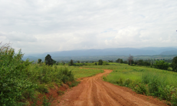

"...บันทึกการเดินทางนี้ ไม่ใช่การเดินทางรอบโลกแต่อย่างใด แต่หากเป็นการเดินทางผ่านประสบการณ์ของจักรยานเสือภูเขา ที่นำมาเล่าสู่กันฟัง..." marchputt |
 |
จักรยานเสือภูเขา ก็เป็นจักรยานเหมือนที่เราเห็นกันทั่วๆ ไปนี่ล่ะ มีสองล้อ เพียงแต่จะมีโช้คติดมาด้วย บางคันมีแต่ด้านหน้า บางคันมีทั้งด้านหน้าและด้านหลัง จักรยานเสือภูเขาเป็นจักรยานที่เรียกได้ว่า ไปได้ถึงไหนถึงกัน สำหรับพวกนักเดินป่าที่ขับรถ 4WD เข้าไปในป่า ก็ลพบากพอตัวเลยทีเดียว แต่ว่าก็ยังยอมลำบาก เอารถคันใหญ่ เข้าไปขับเล่นในป่ากันได้ จักรยานเสือภูเขาก็เหมือนกัน มันไปได้ทุกที่ อยู่ที่ว่าเราจะยอมพามันไปหรือไม่ บางที ถ้าหน้าผาไม่ชันมาก บางคนยังยอมจะแบกมันขึ้นไปเลยทีเดียว หลายคนบอกว่า "ไม่เอาหรอก เหนือย ปั่นไปทำไม ร้อนก็ร้อน" เราปั่นกันเพื่อสุขภาพได้ครับ มีใครบ้างที่ออกกำลังกายแล้วไม่เหนือย ร้อนไหม ไม่ร้อนหรอกครับ จักรยานเสือภูเขา มันก็ต้องปั่นกับภูเขา ในภูเขาบ้านเมืองเรา ยังมีอะไรที่เราไม่รู้มากมายครับ ถ้าพูดถึงน้ำตกแล้วบางคนก็ร้อง อ๋อ เจ็ดสาวน้อยไง น้ำตกในประเทศเรามีอีกมากมายเลยครับ ขอเพียงเราเปิดหูเปิดตาออกจากในเมืองที่วุ่นวาย ไปศึกษาเกี่ยวกับธรรมชาดิบ้าง เราก็รู้กันมาบ้างแล้ว ว่าเสือภูเขา ไม่ได้น่าเบื่ออย่างที่คิด |
ใคร ? ว่าที่ปั่นเสือของเราหายาก คนในเมือง ?เช่นในเมืองหลวงกรุงเทพฯ ของเราชอบบอกว่า กว่าจะออกจาก กทม. ไปเจอภูเขาซักลูกหนึ่ง คงต้องไปค้างคืน ยุ่งยาก และต้นทุนสูง แต่ว่าคำกล่าวพวกนั้น ผมว่าไม่เป็นความจริงเลย ธรรมชาติของประเทศไทยเรานี่มีความสวยงามเยอะนะครับ แต่ว่าบางที เราก็เจอกับปัญหาว่า คนไปกันเยอะ จนมันไม่น่าดูเสียแล้ว ยิ่งเวลาไปกันทีก็มักจะเป็นวันหยุดยาว คนแน่นเอียดทำอะไร หันไปทางไหนคนก็เยอะไปหมด |